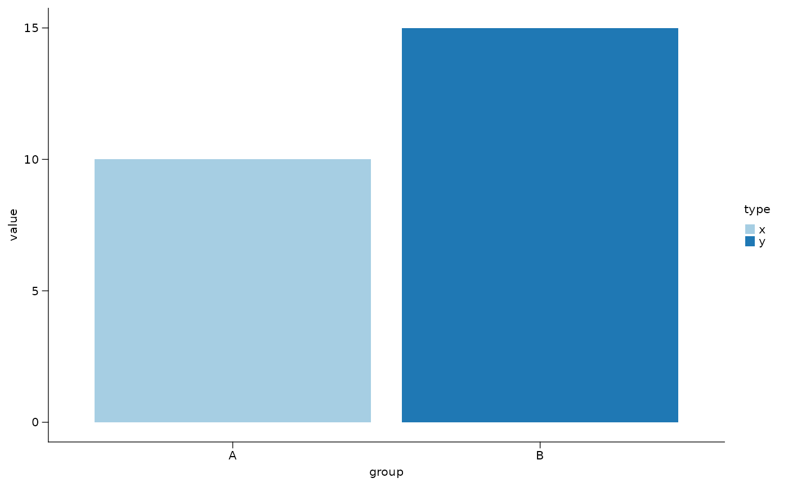

Create a bar plot from a data frame
Usage
sn_plot_barplot(
data,
x,
y,
fill = NULL,
sort_by = NULL,
sort_desc = FALSE,
stat = c("auto", "identity", "summary"),
summary_fun = c("mean", "median"),
errorbar = c("none", "sd", "se"),
show_points = FALSE,
point_alpha = 0.7,
jitter_width = 0.15,
jitter_height = 0.05,
palette = "Paired",
aspect_ratio = NULL,
panel_widths = NULL,
panel_heights = NULL,
x_label = NULL,
y_label = NULL,
title = NULL,
angle_x = 0
)Arguments
- data
A data frame.
- x, y
Columns mapped to the x- and y-axes.
- fill
Optional column mapped to the fill aesthetic.
- sort_by
Optional column used to sort the discrete axis.
- sort_desc
Logical; if
TRUE, sort in descending order.- stat
One of
"auto","identity", or"summary"."auto"summarizes repeated observations per bar and otherwise keeps the input rows as-is.- summary_fun
Summary function used when
stat = "summary"or whenstat = "auto"detects repeated observations. One of"mean"or"median".- errorbar
One of
"none","sd", or"se".- show_points
Logical; if
TRUE, overlay raw observations as jittered points when bars are summarized.- point_alpha
Alpha for overlaid points.
- jitter_width, jitter_height
Jitter distances for overlaid points.
- palette
Discrete palette used when
fillis supplied.- aspect_ratio
Optional panel aspect ratio. When used together with
panel_widthsorpanel_heights, Shennong derives the missing panel dimension automatically.- panel_widths, panel_heights
Optional panel size arguments forwarded to
catplot::theme_cat()when available.- x_label, y_label, title
Optional plot labels.
- angle_x
Rotation angle for x-axis text.
Examples
plot_data <- data.frame(group = c("A", "B"), value = c(10, 15), type = c("x", "y"))
sn_plot_barplot(plot_data, x = group, y = value, fill = type)
